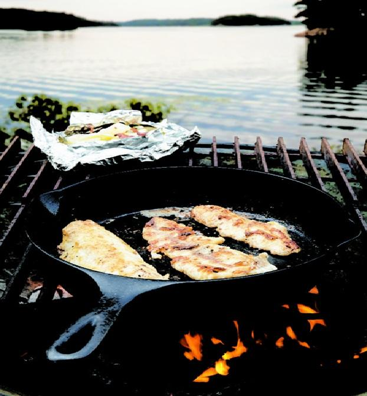
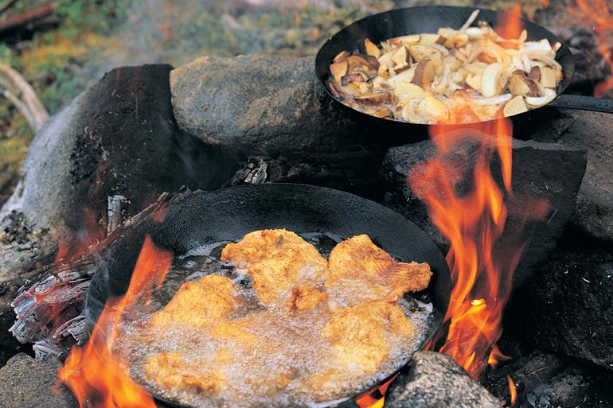
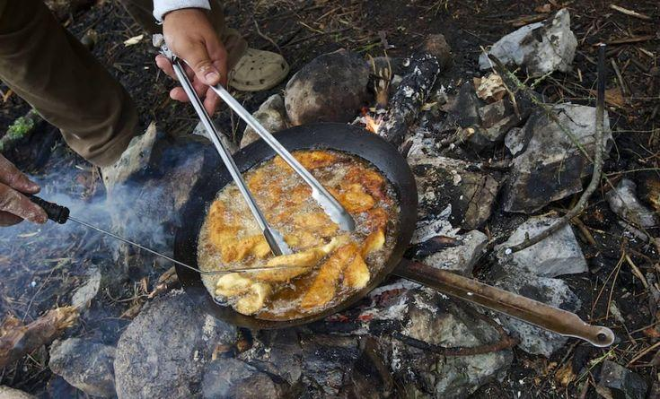

Every fishing recipe on this site has a list of ingredients. Spice rubs, fresh herbs, craft beer, mango salsa. All worth making. But there's an argument that the best meal you'll ever eat from a Quebec lake requires three things: a fish you caught yourself, butter, and salt.
Shore lunch is a tradition across the Canadian Shield that predates every recipe on this site by generations. Guides have been cooking fish this way on the rocks beside the water since before cast iron was common currency. The logic is simple. A walleye pulled from cold, clean water and cooked within the hour doesn't need help. It needs heat and fat and nothing else getting in the way.
The shore lunch isn't really about the food. It's about stopping in the middle of a fishing day, in a place most people never get to, and eating something you caught yourself twenty minutes ago. No recipe improves on that.
The Fish Has to Be Fresh
This recipe doesn't work with yesterday's catch stored in a cooler. The flesh needs to be firm, the smell clean, the fillets translucent before they hit the pan. That's the whole point: you stop fishing, you clean what you caught, you cook it on the spot. Fillet streamside. Rinse in cold lake water, pat dry on a clean cloth or paper towel. Dry fillets crust. Wet fillets steam. This matters even with three ingredients.
The Fire
Build the fire first, before you even think about cleaning the fish. You want a good coal bed, not open flames. Flames are unpredictable and will burn the butter before the fish cooks through. Get the fire going early, let it burn down for 20 to 30 minutes, then cook over the coals and lower flames. If you're on a camp stove, medium-high heat does the same job.
Cast iron is the right pan because it holds heat evenly over a fire you can't control the way you control a stove burner. The fire will fluctuate. Cast iron compensates. Get it hot before the fish goes in and it'll stay hot long enough to give you a proper crust even if the flames die back a little.

"A walleye pulled from cold, clean water and cooked within the hour doesn't need help. It needs heat and fat and nothing else getting in the way."
The Full Recipe
Everything You Need
- 2 fresh walleye fillets (or any freshly caught fish), skin on or off
- 2 to 3 tbsp unsalted butter
- Coarse salt
- A cast iron pan
- A campfire
Method
- Build the fire. Get it going early and let it burn down to a good coal bed, not open flames. You want steady, even heat. This takes 20 to 30 minutes. If you're on a camp stove, medium-high heat works the same way.
- Clean and dry the fish. Fillet streamside. Rinse in cold lake water and pat as dry as you can on a clean cloth or paper towel. Dry fillets crust. Wet fillets steam.
- Heat the pan. Set the cast iron directly over the coals. Let it heat for 3 to 4 minutes. Drop a small piece of butter in, if it foams immediately and starts to brown within 20 seconds, the pan is ready.
- Season and cook. Add the rest of the butter and let it melt and foam. Season fillets generously with coarse salt on both sides. Lay them in the pan away from you. Don't touch them. Cook 3 minutes on the first side for fillets around 1 to 2cm thick.
- Flip and finish. Flip once. Cook another 2 minutes. The flesh should be opaque through and pull away from itself when pressed gently with a finger.
- Eat. Straight from the pan, on a rock, beside the water. No plate required.

A Few Notes
Three things that don't count as extra ingredients. A lemon squeezed over at the end, a slice of bread to mop the brown butter from the pan, a cold beer from the cooler. None of them are necessary. All of them make it better.
On scaling up. One cast iron fits two fillets comfortably. Cook in batches if you kept more fish. Keep finished fillets on a warm rock near the fire while the next batch cooks, don't stack them or they'll steam.
On the fish. Walleye is the classic shore lunch fish in Quebec, but this works with any freshly caught species, perch, pike, trout. The only rule is same-day fresh. The quality of the fish is the whole recipe.

20+ years fishing Quebec's freshwater systems. Kayak angler, catch-and-release advocate, and founder of Sub Urban Anglers.
Read More About Me